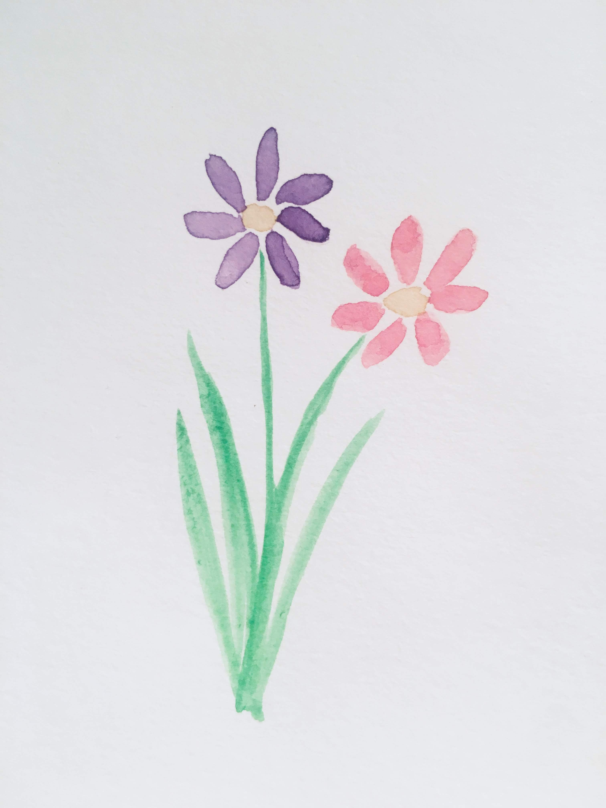
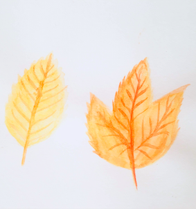
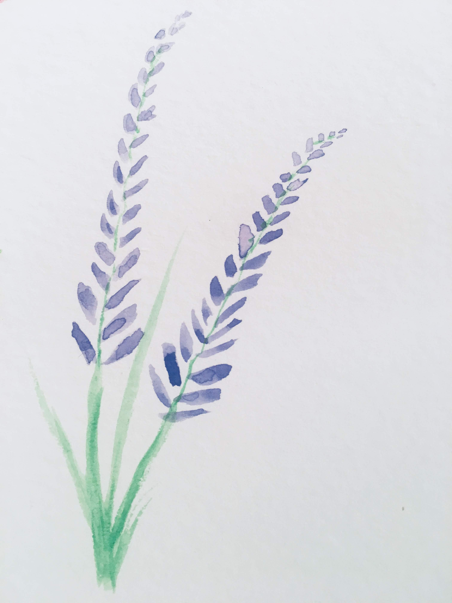
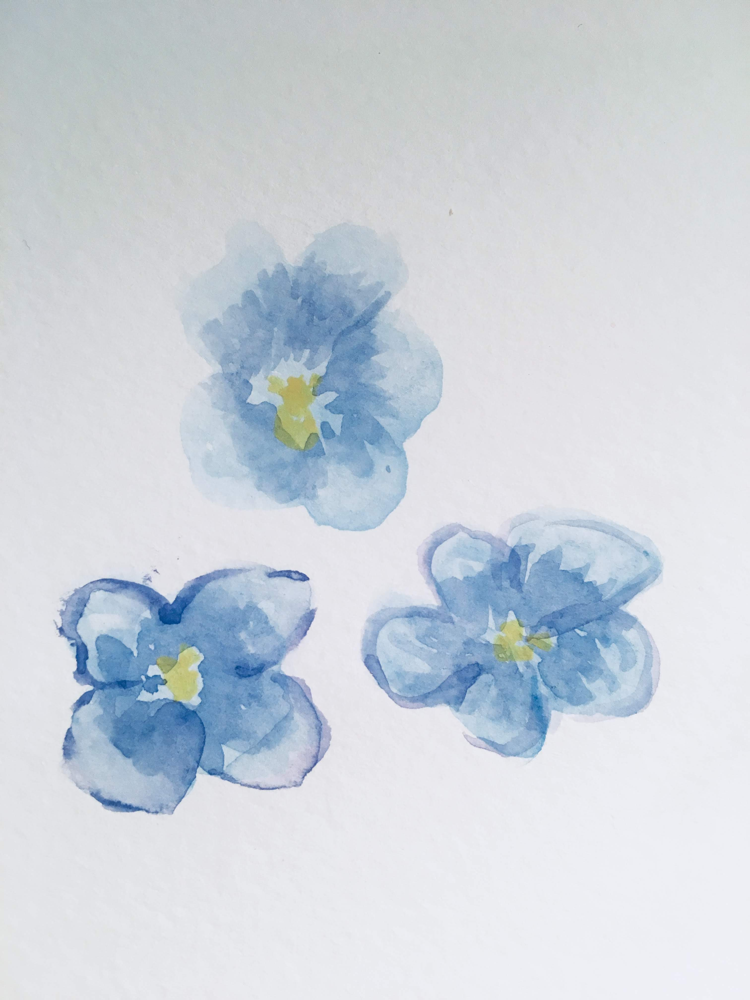
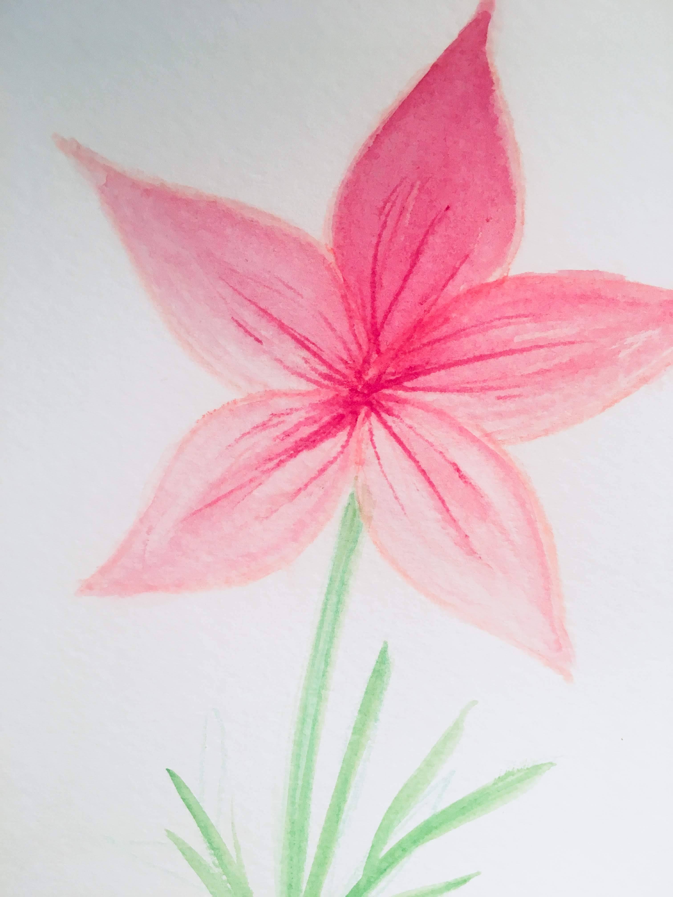
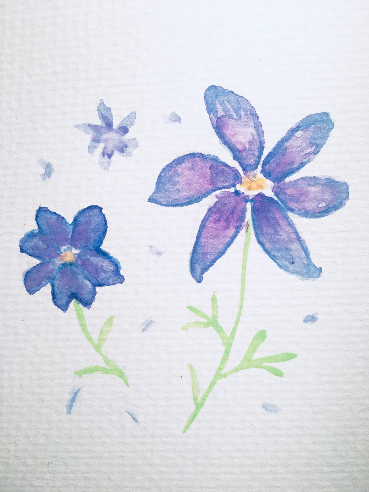
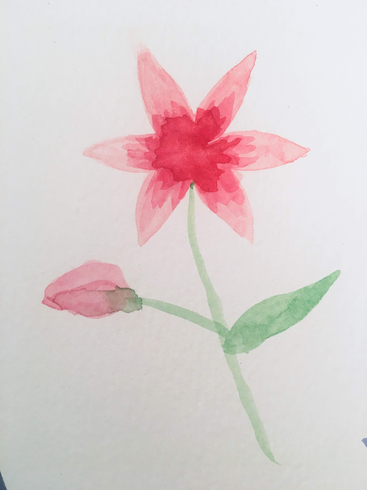
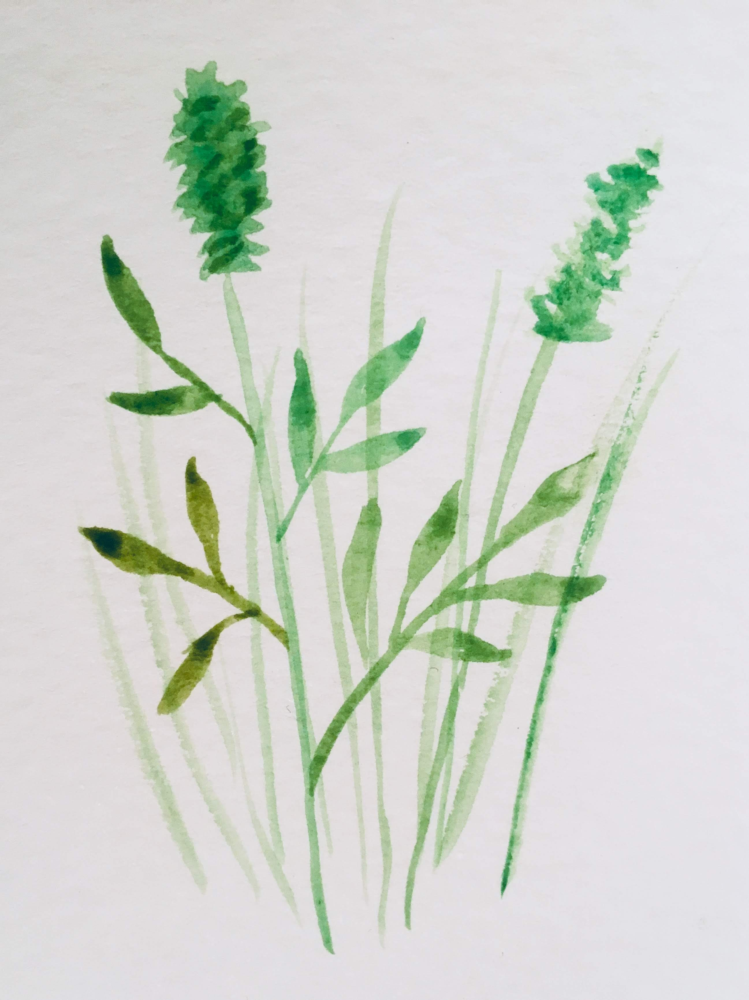
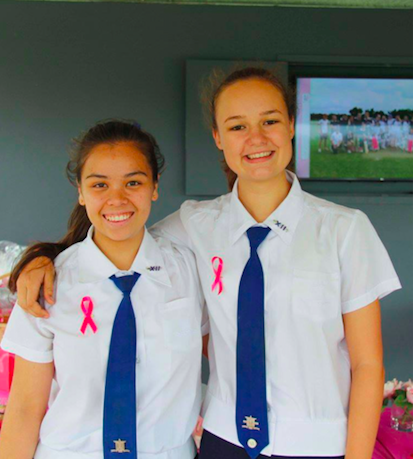

Hey!! I'm Grace welcome to my ePortfolio, a small collection of my work.
I love many things but have decided to focus on a few specific things I've enjoyed doing this year in particular.
In my spare time I love to sing, bake, play piano badly, code (obviously), sleep, daydream, avoid dairy, travel, spend time with friends, listen to music, walk my dog - Toby, play cricket, advocate for the Rights for Graces Movement #rightsforgrace, drink lemon and lime bitters, watch Mark Wiens compose, attempt to watercolour, take photos of flowers.
I'm not sure what I want to do with my life but I'm considering doing something IT or Music related because they are my favourite subjects or perhaps paramedicine, because I would love to do something that helps people.
I think I ended up watching a stream of vidoes of people water colouring and thought how hard can it be? - turns out it's very hard but for some reason I like to try and attempt to do some. Here are some small paintings, I guess they are a result of procrastination. I know these aren't great but yeah, I love doing flowers because they're pretty and that's all my water colour skills seem to be able to cover.

Typical flowers

Autumn Leaves

Lavender

Buttercups

random flower

another random flower

and another random flower

and some grasses
Cricket Leadership
I've played cricket since year 8 at BGGS and this year I was fortunate enough to be voted as one of the cricket captains this year. Not sure why cause I'm actually hopeless. Due to this I have spent a lot of hours daydreaming in the sun and wearing a lot of equipment. I now have quite the collection of ducks.
The highlight of our cricket season was definitely Pink Stumps Day. There was a huge amount of support from the school, wearing pink ribbons and entering the draw for a raffle to show their support for the McGrath Foundation. Additionally, a vast number of supporters came out to Rangakarra to gorge on the delicious pink themed afternoon tea and spectate the inaugural All Stars match; a gripping game between the opens team and some past talented cricketers, including the legendary Kirby Short. We would like to extend a huge thank you to everyone who helped make the day so special, whether you brought a pink ribbon, raffle ticket or came out to Rangakarra, thank you so much for your support, without it we would not have raised an impressive total of $947.90 for the McGrath foundation. This donation will assist in providing breast cancer nurses to small communities around Australia and increase awareness of this devastating disease. We are extremely proud that was the most successful Pink Stumps Day the school has ever seen.

Yellow Cricket
Captains
in our spirit
Winners
I present you..
The 1a team
Hello Lucy!!
×
How to make Pink Ribbons
Step 1
A number of safety pins and a selection of pink ribbons were purchased. The ribbon was cut to pieces with a length of 15cm.
Step 2
The ribbon was twisted into the correct shape and a safety pin placed in between where the ribbon overlaps.
Step 3
A hot glue gun was used to stick the ribbon to one side of the safety pin. This is oder to make it easier to attach to clothing.